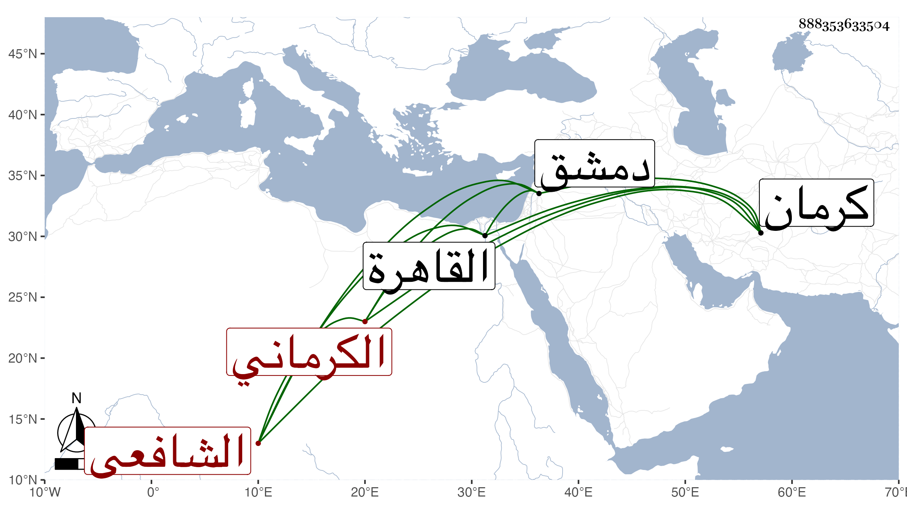

0902Sakhawi.DawLamic.ITO20230111-ara1.EIS1600.888353633504
Biography ID: 888353633504
167
علي العلاء أبو الحسن الكرماني الشافعي . قدم من كرمان إلى دمشق بعد الأربعين فنزل البادرائية منها وقرئ عليه التلخيص وتفسير البيضاوي وغير ذلك وكان ممن أخذ عنه النجم بن قاضي عجلون ، ثم تحول إلى القاهرة وصار بها شيخ الشيوخ بالبسطامية واشتهر بمزيد الفضيلة فاستقر به الظاهر جقمق بسفارة الشيخ على العجمي المحتسب في مشيخة سعيد السعداء بعد عزل أبي الفتح بن القاياتي إلى أن مات بالطاعون في ثاني صفر سنة ثلاث وخمسين ، وكان فاضلا علامة صالحا خيرا ساكنا منجمعا محمود السيرة حضرت دروسه مع الفتحي وبلغني أن من شيوخه سعد الدين لر من طلبة التفتازاني وأنه كان يحفظ المشكاة ويجيد إقراء الكشاف والبيضاوي وأنه لما مات وجدت له دراهم كثيرة وأنكر السلطان ذلك فالله أعلم .
